To perform the Kaal Sarp Dosh Puja in Ujjain, you can contact a local Pandit or a reputable service provider to book the ritual, which can be done online or offline. The puja is a powerful astrological ritual performed to alleviate the negative effects of the Kaal Sarp Dosh and typically involves a bath, fasting, and wearing specific traditional attire. The ritual takes place in Ujjain, a sacred city and home to the Mahakaleshwar Jyotirlinga, enhancing the puja's effectiveness.

Mangal Dosh Puja is a Hindu ritual to lessen the negative influence of Mars in a person's birth chart (Janma Kundli) and bring peace, prosperity, and harmony to their life, especially in relationships and marriage. The puja involves offerings to the nine planets, particularly Mars, and the chanting of specific mantras to calm its aggressive energy. Key practices include worshipping Lord Ganesha, performing a Havan (fire ritual), and, for optimal results, performing the ritual at sacred sites like the Mangalnath Temple in Ujjain.

Pandit for Pitra Dosh Puja in Ujjain: Pitra Dosh Puja in Ujjain is a Hindu ritual performed to appease restless ancestral spirits and resolve negative karmic influences caused by them. The puja aims to bring peace to ancestors, remove obstacles in the family's life, and grant blessings for harmony, health, and prosperity. Key elements include offering pinds (rice balls) and water, chanting mantras, performing a havan (fire ritual), and often takes place at sacred sites like Siddhavat Ghat along the Shipra River.

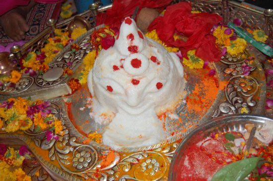
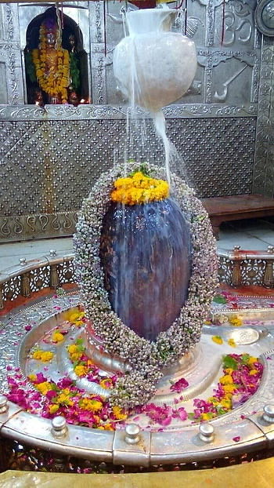
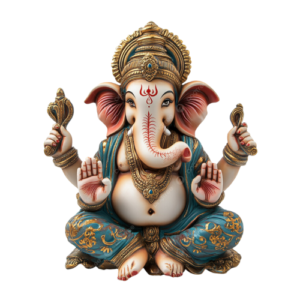
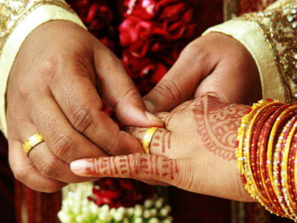
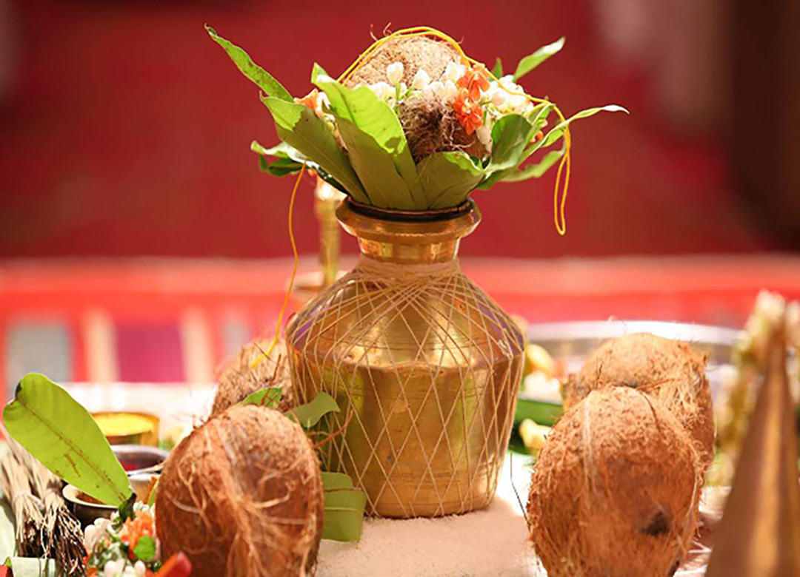
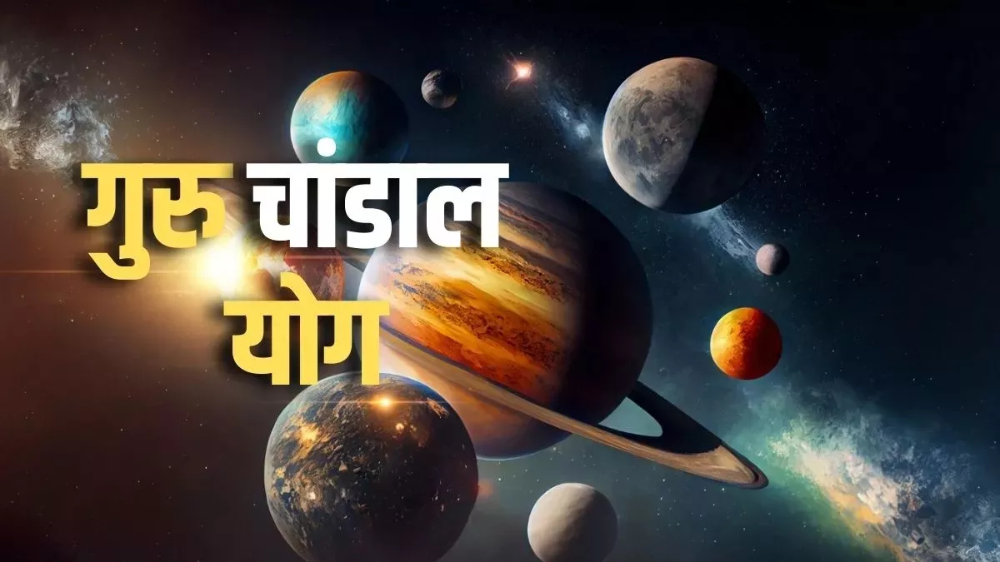
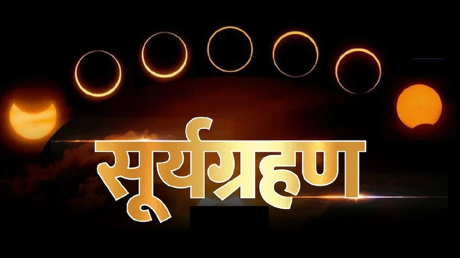
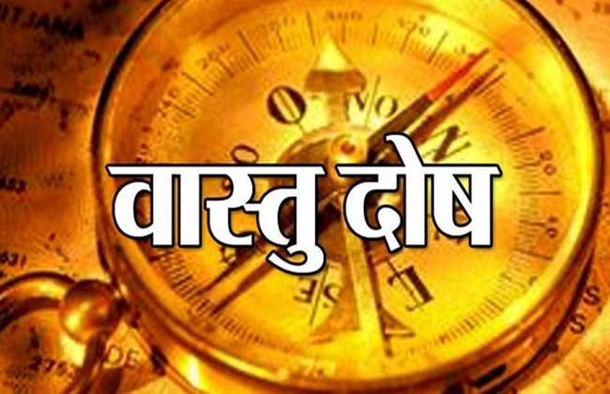
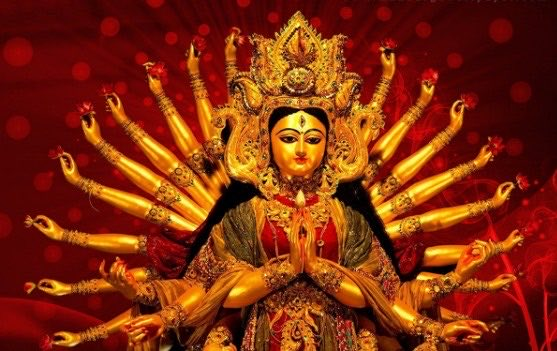
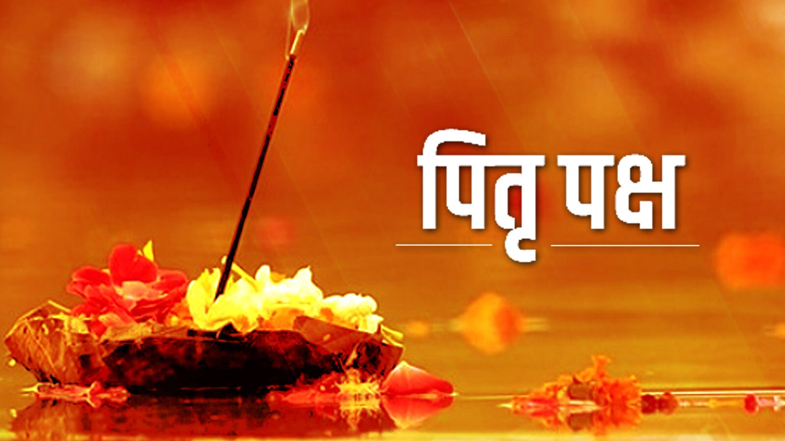
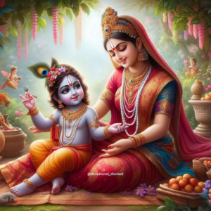
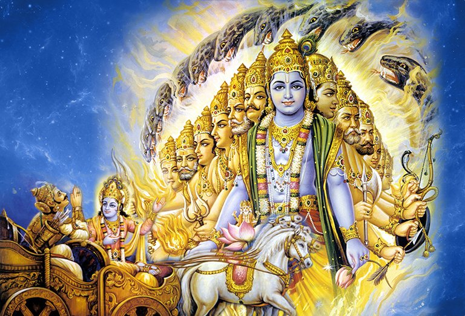
Pandit Ji began his religious and spiritual journey from childhood. He has obtained certificates from various prestigious religious institutions during his studies and sadhana. He has deep knowledge of rituals, astrology, Vedas, scriptures, and Bhagwat Katha. Pandit Ji has received recognition from many colleges and spiritual institutions. He has received education from prominent centers like Shrimad Bhagwat Mahavidyalaya and Panini University, where he gained expertise in theology and astrology. In addition, he has been conducting various religious rituals, puja methods, and yajnas for the past 9 years. This certificate of Pandit Ji certifies his immense knowledge and experience in the field of religion and spirituality.


From childhood, Ram Lakhan Ji had an interest in spiritual and divine books. His childhood was spent on the holy land of Ujjain, where he received his primary education on Shri Ramanuj Kot Ramghat Road. Later, he honed his scholarship at Government Sanskrit College and Panini University, Ujjain. After that, he went to Vrindavan, where he studied music and Bhagwat Katha in depth at Shrimad Bhagwat Mahavidyalaya Kesi Ghat. For the past 9 years, Ram Lakhan Ji has established his special expertise in rituals, astrology, Bhagwat Yajna, and other Vedic rituals. He has received recognition from many colleges and spiritual institutions. His life is based on the ideals of knowledge and service. He has not only mastered Vedic scriptures and rituals but has also worked to propagate his knowledge in society. The yajnas and rituals organized by him not only have religious significance but also spread positive energy in society. His storytelling style has a unique attraction that helps listeners understand God's leelas and the profound messages of Vedanta. Ram Lakhan Ji's aim is not only to spread spirituality but also to connect the new generation with the fundamental teachings of Indian culture and Sanatan Dharma. His simplicity, humility, and knowledge have made him famous throughout the country. He always inspires people to follow the path of truth, religion, and karma.

Guruji has over 20 years of experience in puja

We are available 24/7, 365 days for our customers.
Free online consultation is available on call.

Astro consultation is also provided as per customers' needs.
When all the planets are positioned between Rahu and Ketu in the birth chart, Kalsarp Dosh is formed in the Kundali. If the Sun and Moon are also between Rahu and Ketu, then Kalsarp Dosh is formed. Similarly, the position of any planet between Rahu and Ketu also creates Kalsarp Dosh. Kalsarp Yoga is of 12 types. Due to this defect, many obstacles can come in job and business. Efforts to remove the defect bring peace to the native and stalled work also starts to complete. Among all the pilgrimages, Ujjain is considered the best and largest pilgrimage because Mahakumbh is held here and Mahakal is enshrined here. Kalsarp Dosh worship is performed on the banks of the Shipra River in Ujjain.
According to Hindu astrology, when all seven planets (Sun, Moon, Mars, Mercury, Jupiter, Venus, Saturn) are between Rahu and Ketu in a person's birth chart, it is called Kalsarp Dosh. This means that all the planets in the person's Kundali are enclosed between Rahu and Ketu, as if forming the shape of a serpent. This dosh is also called "Kalsarp Yoga".
The effects of Kalsarp Dosh affect a person's life in various ways. This dosh can cause mental, physical, and material problems. Due to this dosh, a person may face the following problems:
Kalsarp Dosh Puja is an effective remedy that is performed to reduce, destroy or control the adverse effects of this dosh. The benefits of this puja can be as follows:
Kalsarp Dosh Puja is a very special puja, which should be performed by a qualified Pandit or Acharya. This puja has the following main elements:
Performing Kalsarp Dosh Puja at special times is considered more fruitful, such as - Navratri, Rahu Kaal, Monday or Saturday.
Kalsarp Dosh Puja is an important remedy that helps reduce problems in life and bring positive changes. Following it under the guidance of an expert can bring peace, prosperity and happiness in life.

Mangal Dosh is an astrological defect that occurs when Mars is positioned in specific houses (1, 4, 7, 8, 12) in the birth chart. The effects of Mangal Dosh are specially considered, and its impact can have a profound effect on various areas of a person's life. Due to this defect, a person may face marital, relationship problems, uncertainty, family disputes, financial problems, property loss, land-related troubles, physical problems like blood pressure, brain-related diseases, etc. The effects of Mars sitting in the Kundali according to its high and low positions, etc. When Mars is positioned in these houses in both the Moon chart and Navamsha, it also has a deep impact on the person's life.
Various remedies are mentioned in Jyotish Vidya to pacify Mangal Dosh. For example:
# Some remedies to pacify Mangal Dosh are as follows:
1. Performing Mangalnath Temple and Angareshwar Temple (Ujjain) Mangal Shanti Bhata Puja.
2. Performing 44,000 chants of Mars mantra and serving Hanuman Ji.
3. Giving up red clothes and donating red colored items.
4. Serving cows and feeding them jaggery and bread, etc.
Mangal Dosh, also called "Mangal Grah Dosh" or "Chandra Mangal Dosh", is an astrological defect that occurs when the planet Mars (red planet) is in an undesirable position with the Moon, Sun, Venus or other planets in the birth chart. Especially when Mars is positioned in the 1st, 4th, 7th, 8th or 12th house, it is considered Mangal Dosh. This defect can cause many kinds of troubles in a person's life, especially problems in marriage and family life.
ॐ क्रां क्रीं क्रौं सः मंगळाय नमः।
Chant this mantra 108 times, or more times like 1008 times.
Conclusion: Mangal Dosh Puja reduces the malefic effects of Mars in a person's life and brings positivity. It should be performed with the right method and devotion.
Mangalnath Temple Ujjain is a world famous place of astrological and religious importance. This place is considered especially best for removing the defects of Mars. It is believed that performing puja-archana here quickly brings benefits for removing Mangal Dosh, Pitra Dosh in Kundali, delay in marriage, problems in marital life and obstacles in career.
This place is considered the birthplace of Mars. Performing puja here gives immediate positive results to the native. Devotees from India and abroad come here to perform Mangal Dosh Puja, Mangal Bhat Puja and special rituals.
Ujjain Mangalnath Puja Booking If you want to perform Mangal Dosh Puja or special rituals in Mangalnath Temple, it is very important to get the puja performed by an experienced and learned Panditji. Only puja performed with the right method and procedure brings auspicious results in life.


As a puja specialist, Guruji has acquired special expertise in this puja. He has so far completed countless peace pujas and yajnas, from which the yajmans got excellent results immediately.
Address: Kanipura Road Giriraj Ratan Colony A Sector, House No: 539, Ujjain (M.P.)
Email: ramlakhansharma8319@gmail.com
Contact Number: +916263635078